Open Filo.dmg and drag Filo into Applications. It isn’t notarized by Apple yet, so the first time, right-click Filo.app, choose Open, then Open again. After that it opens like any app.
A friend on your screen
Filo puts a small companion on your Mac. It walks along your windows, notices your day, and decides for itself when something is worth saying.
Download for Mac
For macOS on Apple silicon · version 1.0
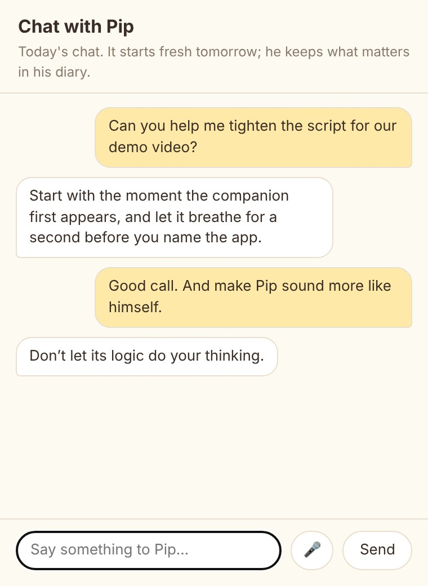
Meet Pip
A clever little clockwork bird who thinks he’s much smarter than everyone else. He winds himself up, investigates things with a magnifying glass, and conducts the music you play.
Good company
It looks after the small things, keeps quiet when you’re busy, and is there when something good happens.
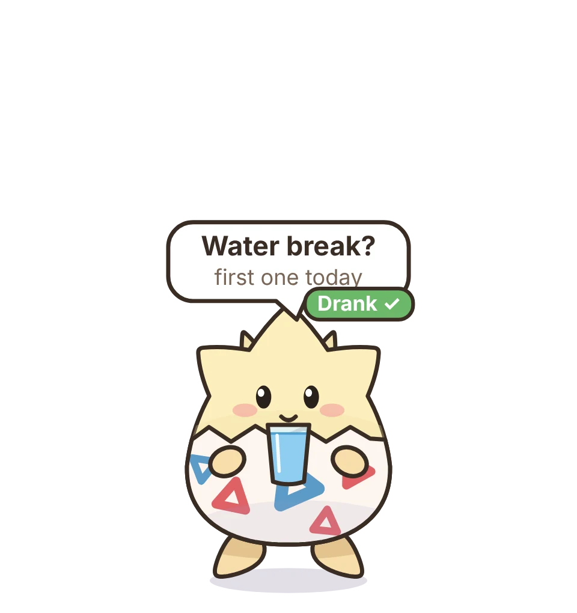
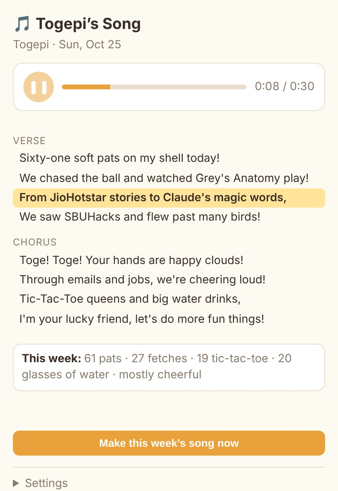
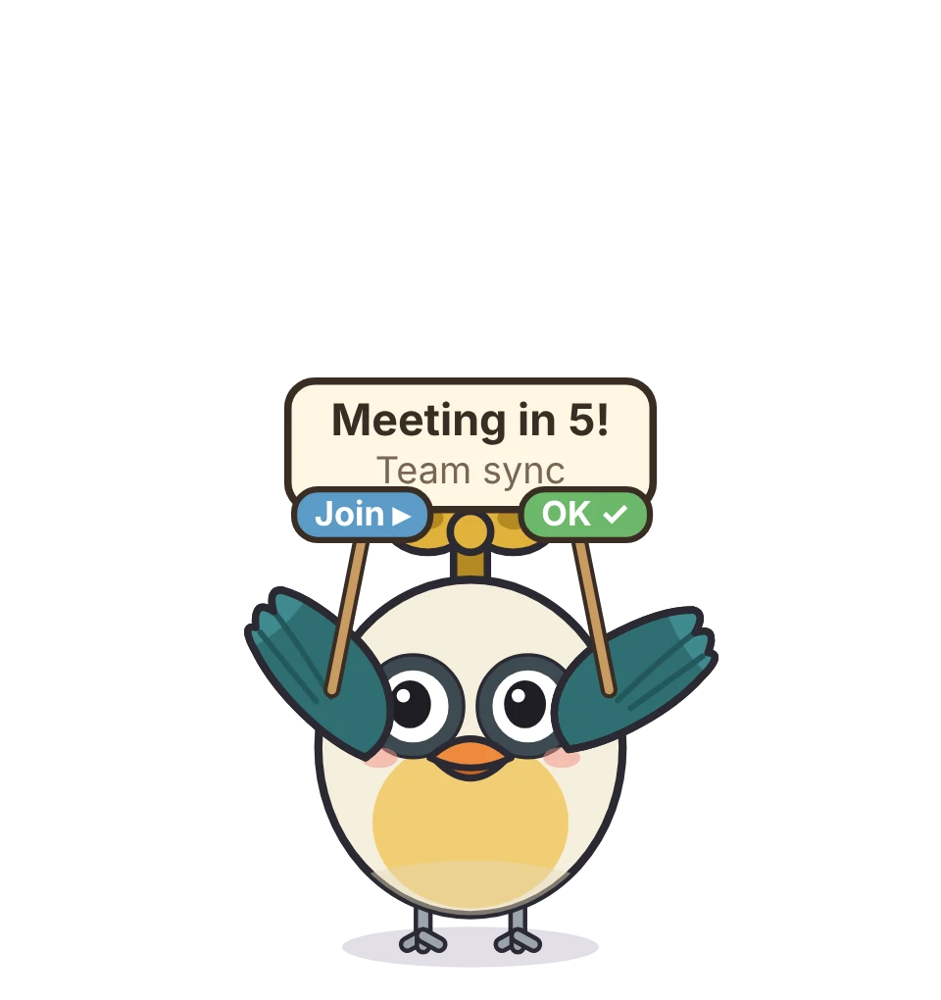
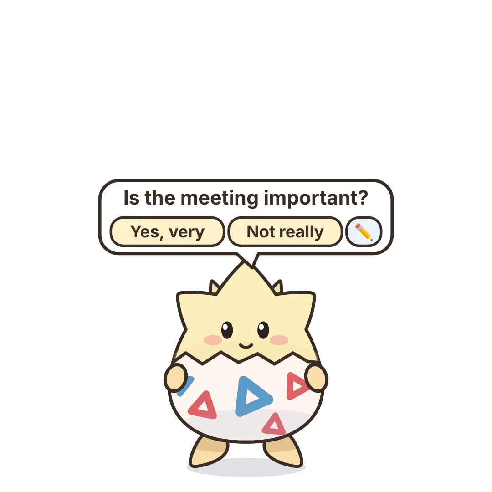
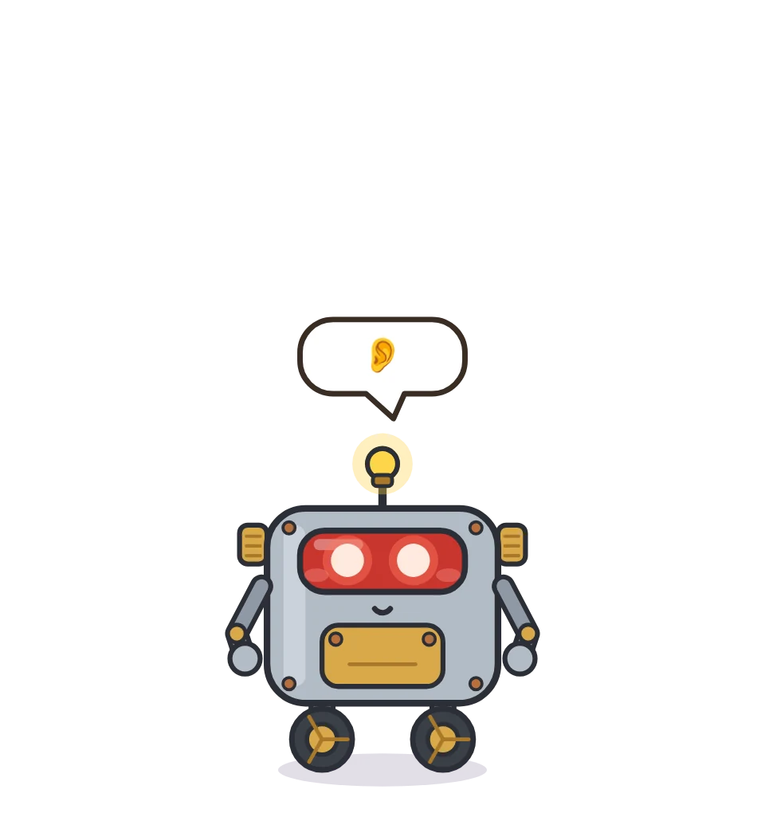
It thinks on your Mac
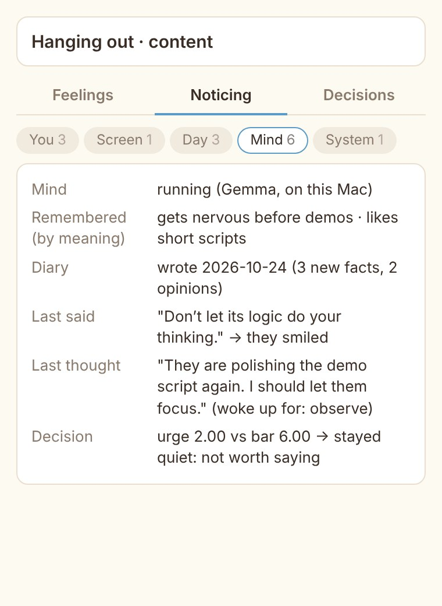
No account, no cloud
Its mind is a language model that runs right on your Mac. On a smaller Mac you can pick Gemini instead, and Filo tells you exactly what that sends.
Private windows never pass
Private and incognito windows, and anything on your blocklist, never reach its mind. Seeing your apps and reading your screen are both off until you turn them on.
Filo in figures
- 6companions
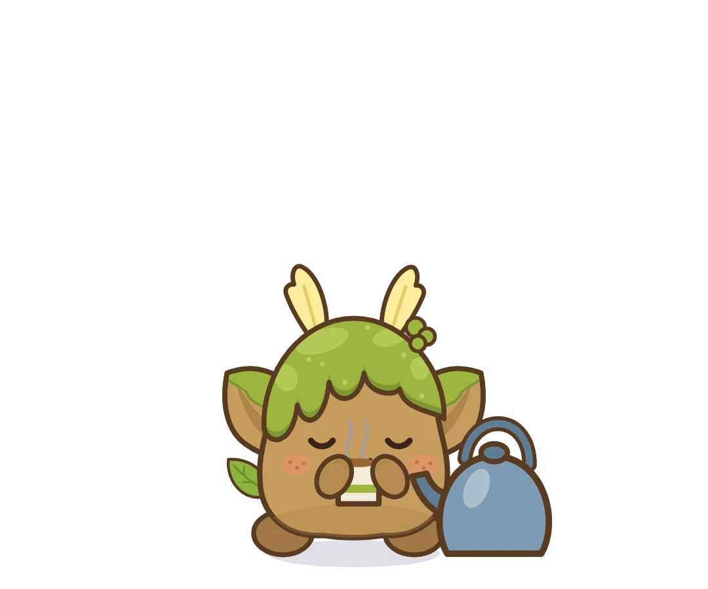
- 34personality traits each
- 19values each
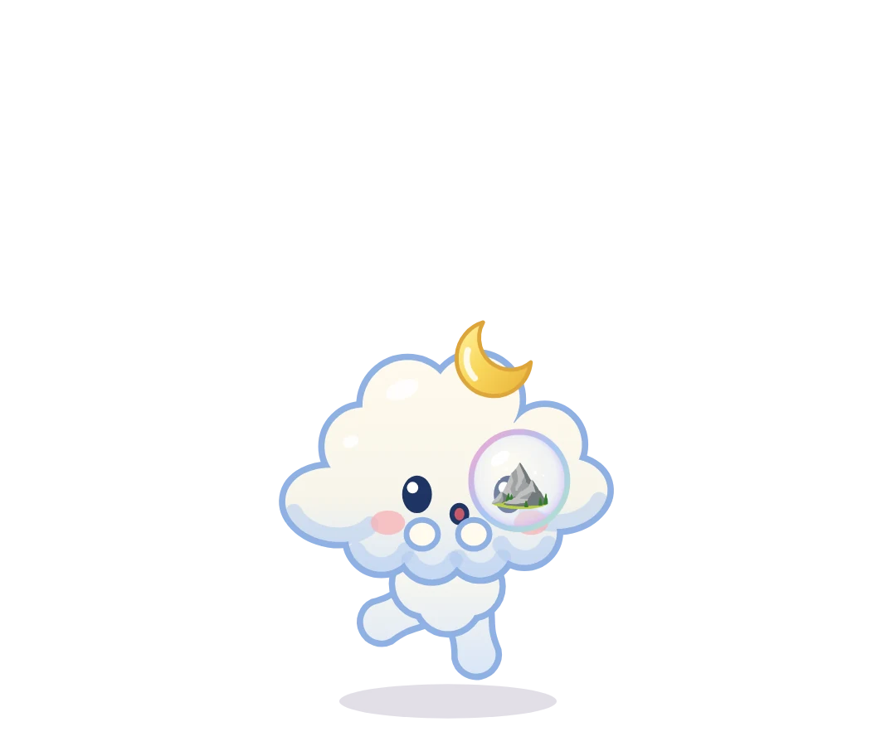
- ⌥and Space, to talk
- 0accounts
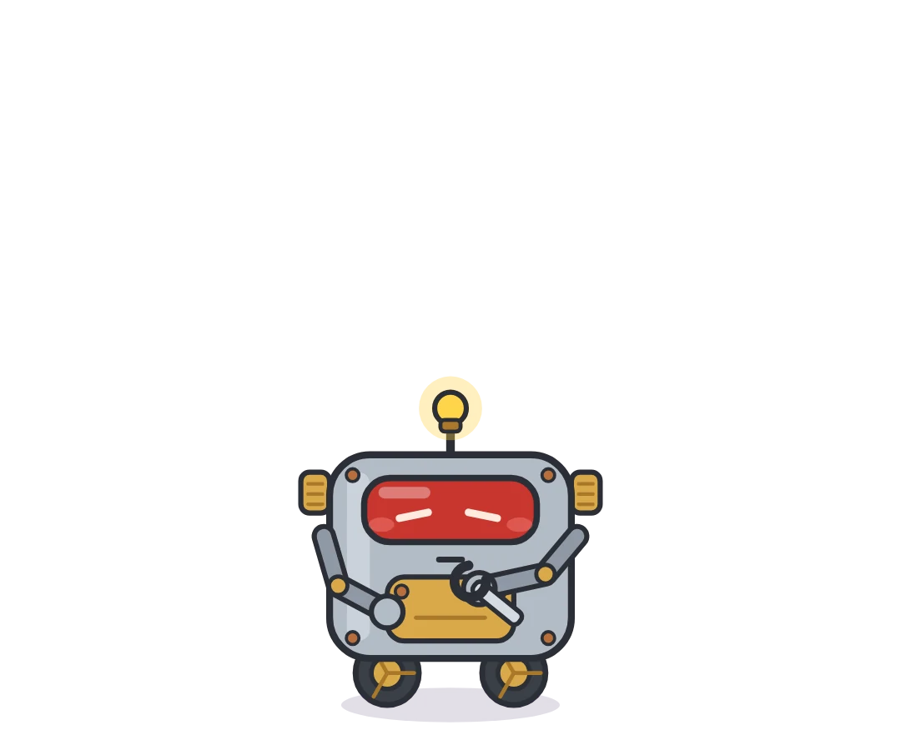
- 30ssong every Sunday
- 5sto join you watching
Before you download
A Mac with Apple silicon. Its mind runs on your Mac and uses about 11 GB of memory while it runs, so 16 GB or more is best. On a smaller Mac, choose Gemini when Filo first asks how it should think.
Only what you allow. “Notice which app I’m using” shows it app names and window titles; “Let him read my screen” lets it read the window you’re looking at. Both are off until you switch them on, and private windows never pass.
No. It listens only when you press ⌥ Space or the microphone button in the chat, never in meetings, and the recording is deleted as soon as it’s turned into text.
Any time, from Character in its menu. Your reminders, water count and settings stay, and each companion keeps its own memories.
From 6 pm on Sunday your companion writes a 30-second song about your week and ElevenLabs sings it. It’s off until you switch it on and add your own ElevenLabs key, and only the song’s words are sent.
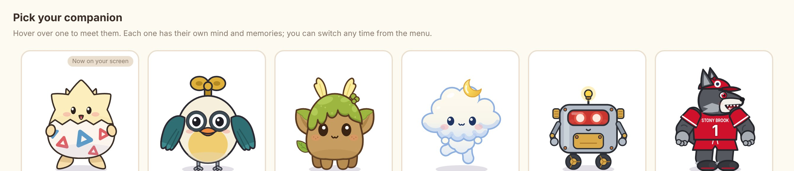
Bring a friend home
Filo for macOS on Apple silicon. Download it, drag it into Applications, and pick your companion.
Download Filo.dmg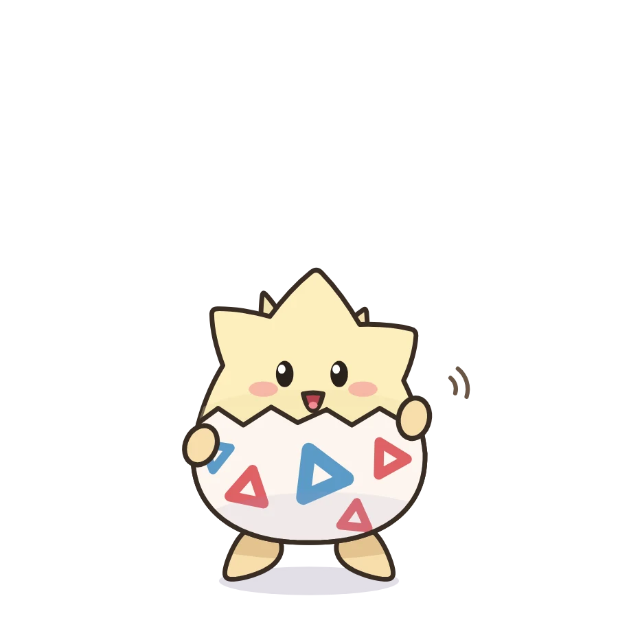